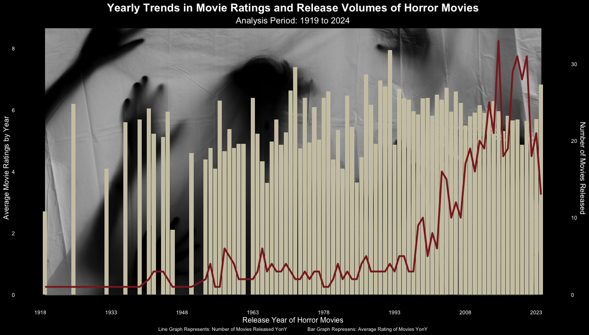
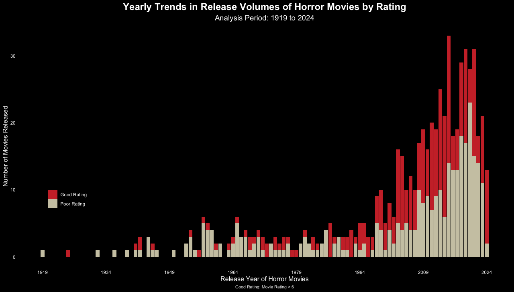
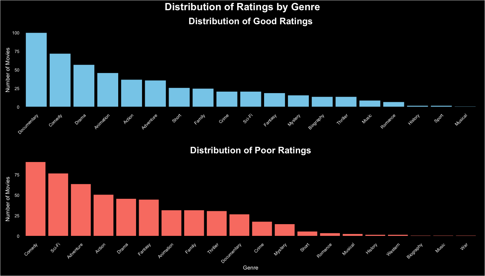

Loading Libraries
library(tidyverse)
library(grid)
library(jpeg)
library(patchwork)29th October 2024
Arun Koundinya Parasa
October 31, 2024
This particular visualization is done on R to visualize the data with custom back ground.
monster_movie_genres <- readr::read_csv('https://raw.githubusercontent.com/rfordatascience/tidytuesday/master/data/2024/2024-10-29/monster_movie_genres.csv')
monster_movies <- readr::read_csv('https://raw.githubusercontent.com/rfordatascience/tidytuesday/master/data/2024/2024-10-29/monster_movies.csv')bg_image <- readJPEG("horror.jpg")
bg_image <- rasterGrob(bg_image, interpolate=TRUE)
coeff <- 4
monster_movies |>
group_by(year) |>
summarise(AvgRunTime = mean(runtime_minutes), AvgRating = mean(average_rating), AvgVotes = mean(num_votes),
NoOfMovies = n(), .groups = "drop") |>
mutate(
Year = as.Date(paste("01/01/", year, sep=""), "%d/%m/%Y")
) |>
ggplot(aes(x = Year)) +
annotation_custom(
bg_image, xmin = as.Date("1919-01-01"), xmax = as.Date("2024-01-31"), ymin = -3.3,
ymax = 14
) +
geom_bar(aes(y=AvgRating), stat="identity", linewidth=.1, fill = "cornsilk3") +
geom_line(aes(y=NoOfMovies / coeff), size=1.4, color = "brown4") +
scale_x_date(breaks = seq(from = as.Date("1918-01-01"),
to = as.Date("2025-01-01"),
by = "15 years"),
date_labels = "%Y") +
scale_y_continuous(
name = "Average Movie Ratings by Year",
sec.axis = sec_axis(~.*coeff, name = "Number of Movies Released")
) +
theme_minimal() +
labs(
title = "Yearly Trends in Movie Ratings and Release Volumes of Horror Movies",
subtitle = "Analysis Period: 1919 to 2024",
x = "Release Year of Horror Movies",
caption = "Line Graph Represents: Number of Movies Released YonY Bar Graph Represens: Average Rating of Movies YonY"
) +
theme(
plot.background = element_rect(fill = "black", color = "black"),
panel.background = element_rect(fill = "black"),
axis.text = element_text(color = "white"),
axis.title = element_text(color = "white"),
axis.title.y = element_text(size=12),
axis.title.y.right = element_text(size=12),
axis.title.x = element_text(size=12),
panel.grid.minor.y = element_blank(),
panel.grid.major.y = element_blank(),
panel.grid.minor.x = element_blank(),
panel.grid.major.x = element_blank(),
plot.title = element_text(hjust = 0.5, size = 18, face = "bold", color = "white"),
plot.subtitle = element_text(hjust = 0.5, size = 14, color = "white"),
plot.caption = element_text(hjust = 0.5, size = 8, color = "white")
) 
However, the average rating of the genres remained same
monster_movies |>
mutate(
RatingBucket = case_when(
average_rating > 6 ~ "Good Rating",
average_rating <= 6 ~ "Poor Rating"
)
) |>
group_by(year,RatingBucket) |>
summarise(NoOfMovies = n(), .groups = "drop") |>
mutate(
Year = as.Date(paste("01/01/", year, sep=""), "%d/%m/%Y")
) |>
ggplot(aes(x = Year, y = NoOfMovies, fill = RatingBucket)) +
geom_bar(stat = "identity", linewidth = .1) +
scale_fill_manual(values = c("Good Rating" = "brown3", "Poor Rating" = "cornsilk3")) +
scale_x_date(breaks = seq(from = as.Date("1919-01-01"),
to = as.Date("2024-01-01"),
by = "15 years"),
date_labels = "%Y") +
theme_minimal() +
labs(
title = "Yearly Trends in Release Volumes of Horror Movies by Rating",
subtitle = "Analysis Period: 1919 to 2024",
x = "Release Year of Horror Movies",
y = "Number of Movies Released",
caption = "Good Rating: Movie Rating > 6"
) +
theme(
plot.background = element_rect(fill = "black", color = "black"),
panel.background = element_rect(fill = "black"),
axis.text = element_text(color = "white"),
axis.title = element_text(color = "white"),
axis.title.y = element_text(size=12),
axis.title.y.right = element_text(size=12),
axis.title.x = element_text(size=12),
panel.grid.minor.y = element_blank(),
panel.grid.major.y = element_blank(),
panel.grid.minor.x = element_blank(),
panel.grid.major.x = element_blank(),
plot.title = element_text(hjust = 0.5, size = 18, face = "bold", color = "white"),
plot.subtitle = element_text(hjust = 0.5, size = 14, color = "white"),
legend.position = c(0.1,0.3),
legend.text = element_text(color = "white"),
plot.caption = element_text(hjust = 0.5, size = 8, color = "white")
) 
monster_movies |>
mutate(
RatingBucket = case_when(
average_rating > 6 ~ "Good Rating",
average_rating <= 6 ~ "Poor Rating"
)
) |>
filter(
RatingBucket == "Good Rating"
) -> GoodRating
monster_movies |>
mutate(
RatingBucket = case_when(
average_rating > 6 ~ "Good Rating",
average_rating <= 6 ~ "Poor Rating"
)
) |>
filter(
RatingBucket == "Poor Rating"
) -> PoorRating
GoodRatings <- subset(monster_movie_genres,monster_movie_genres$tconst %in% GoodRating$tconst)
PoorRatings <- subset(monster_movie_genres,monster_movie_genres$tconst %in% PoorRating$tconst)
rm(GoodRating,PoorRating)
GoodRatings <- subset(GoodRatings, GoodRatings$genres != "Horror")
PoorRatings <- subset(PoorRatings, PoorRatings$genres != "Horror")
# Plot for Good Ratings
good_ratings_plot <- GoodRatings |>
group_by(genres) |>
summarise(NoOfGenres = n()) |>
arrange(desc(NoOfGenres)) |>
ggplot(aes(x = reorder(genres, -NoOfGenres), y = NoOfGenres)) +
geom_bar(stat = "identity", fill = "skyblue", color = "black") +
labs(
title = "Distribution of Good Ratings",
y = "Number of Movies",
x = ""
) +
theme_minimal() +
theme(
plot.background = element_rect(fill = "black", color = "black"),
panel.background = element_rect(fill = "black"),
plot.title = element_text(hjust = 0.5, size = 18, face = "bold", color = "white"),
axis.text = element_text(color = "white"),
axis.text.x = element_text(angle = 45, hjust = 1, color = "white"),
axis.title = element_text(color = "white"),
panel.grid.minor.y = element_blank(),
panel.grid.major.y = element_blank(),
panel.grid.minor.x = element_blank(),
panel.grid.major.x = element_blank(),
)
# Plot for Poor Ratings
poor_ratings_plot <- PoorRatings |>
group_by(genres) |>
summarise(NoOfGenres = n()) |>
arrange(desc(NoOfGenres)) |>
ggplot(aes(x = reorder(genres, -NoOfGenres), y = NoOfGenres)) +
geom_bar(stat = "identity", fill = "salmon", color = "black") +
labs(
title = "Distribution of Poor Ratings",
x = "Genre",
y = "Number of Movies"
) +
theme_minimal() +
theme(
plot.background = element_rect(fill = "black", color = "black"),
panel.background = element_rect(fill = "black"),
plot.title = element_text(hjust = 0.5, size = 18, face = "bold", color = "white"),
axis.text = element_text(color = "white"),
axis.text.x = element_text(angle = 45, hjust = 1, color = "white"),
axis.title = element_text(color = "white"),
panel.grid.minor.y = element_blank(),
panel.grid.major.y = element_blank(),
panel.grid.minor.x = element_blank(),
panel.grid.major.x = element_blank(),
)
# Combine plots using patchwork
combined_plot <- good_ratings_plot + poor_ratings_plot +
plot_layout(ncol = 1) +
plot_annotation(
title = "Distribution of Ratings by Genre",
theme = theme(
plot.background = element_rect(fill = "black"),
plot.title = element_text(color = "white", size = 20, face = "bold",hjust = 0.5)
)
)
# Display combined plot
combined_plot